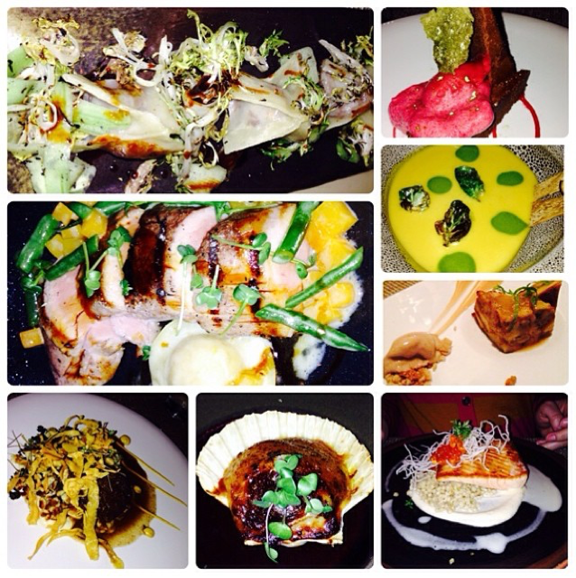

As you may know, my husband, Billy, and I love food. We love to cook and we love to eat!
We have an adventurous spirit when it comes to trying new things with food. We are excited to share our experiences with you!
Please check out the links above for some of our favorite savory recipes, dessert recipes and top Chicago restaurants.
If you would like to get in touch with me, contact information is below.
We look forward to sharing our love of food with you here at Coy's Culinary Adventures!
